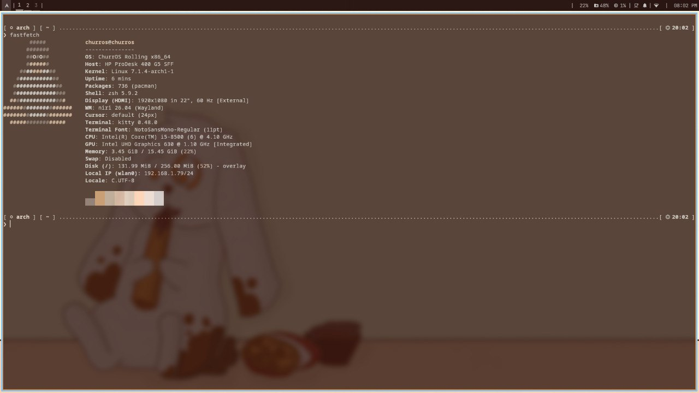

Niri Edition
ChurrOS con Niri — un compositor Wayland minimalista y eficiente. Ideal para equipos con recursos limitados, ofreciendo una experiencia limpia, rápida y moderna sin sacrificar rendimiento.
Descargar ChurrOS Niri
SHA256:
35c33cc385384a6203d1b8640ae81d13e3bb4c6b43d454aab8c585bf3374d7f2
